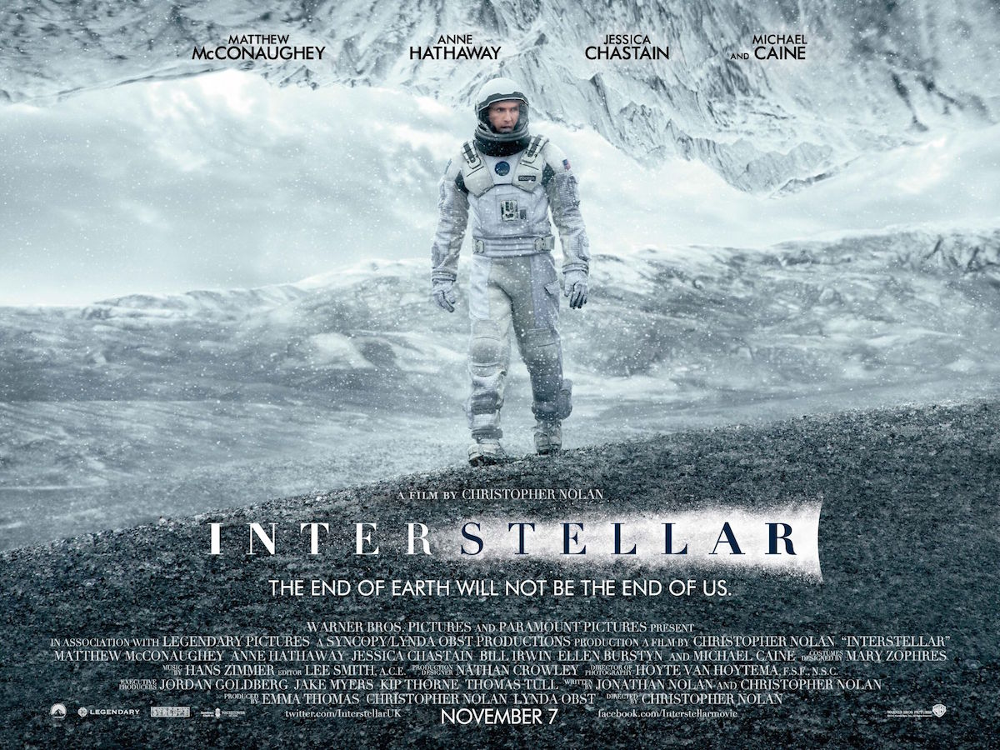
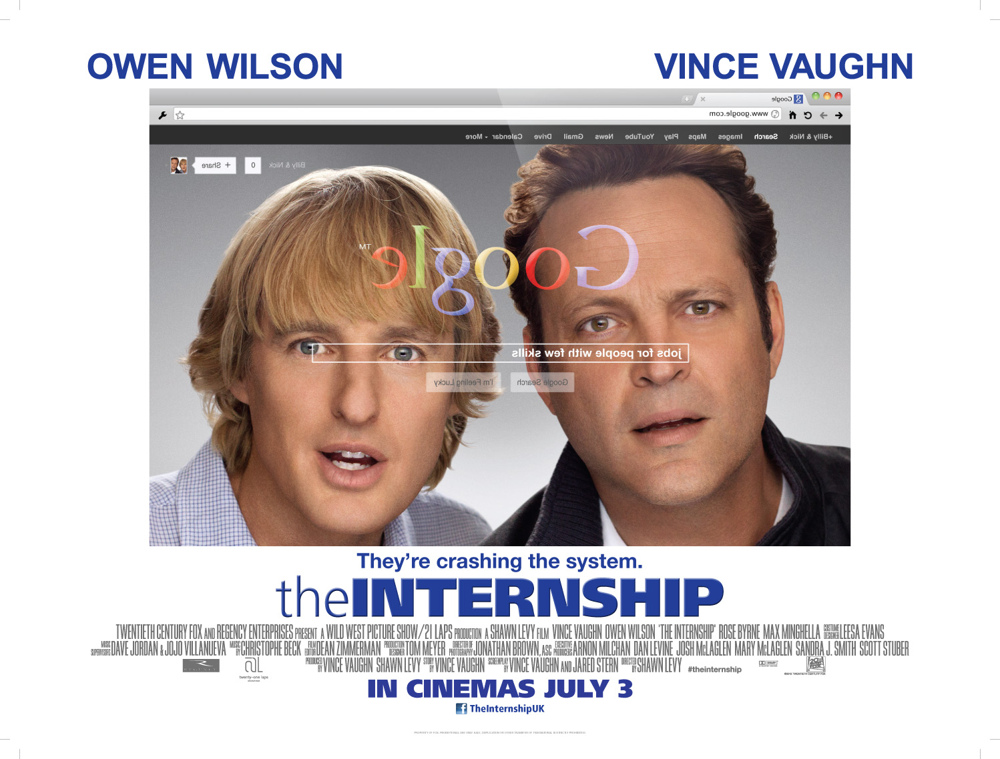

Interstellar
Genre: fantasy, drama, adventure,
Release date: 26 October 2014
Description: A team of explorers travel through a wormhole in space in an attempt to ensure humanity's survival. Earth's future has been riddled by disasters, famines, and droughts. There is only one way to ensure mankind's survival: Interstellar travel.
One Flew Over the Cuckoo's Nest

Genre: drama
Release date: 19 November 1975
Description: A criminal pleads insanity after getting into trouble again and once in the mental institution rebels against the oppressive nurse and rallies up the scared patients.
Freedom Writers
Genre: drama, criminal, biography
Release date: 5 January 2007
Description: In The Freedom Writers Diary, a group of underprivileged students maintain daily journals under the direction of their teacher, Erin Gruwell. She introduces them to The Diary of Anne Frank and other nonfiction books that inspire them to study history and discover the meaning of freedom.
The Internship
Genre: comedy
Release date: 29 May 2013
Description: Two salesmen whose careers have been torpedoed by the digital age find their way into a coveted internship at Google, where they must compete with a group of young, tech-savvy geniuses for a shot at employment. ... And they compete against other teams cause only one team will be hired.